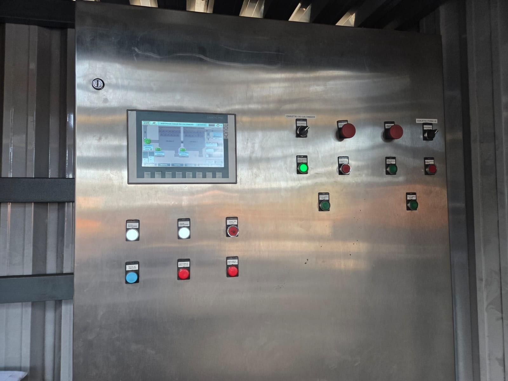

Comissionamento e start-up
Comissionamento a frio e a quente, loop check e testes ponto a ponto, start-up assistido, apoio em parada programada e treinamento de operação e manutenção — com recebimento e validação de equipamentos de fabricantes nacionais e estrangeiros.
- Equipamento chegando de fabricante nacional ou estrangeiro sem responsável técnico pelo controle na sua planta.
- Parada programada com janela curta e sem equipe de automação disponível.
- Planta nova entregue sem documentação e sem a equipe treinada para sustentar o sistema.
- Comissionamento a frio: loop check e testes ponto a ponto contra a lista de I/O.
- Comissionamento a quente e posta em marcha com a operação.
- Start-up assistido e apoio em parada programada.
- Recebimento e validação de equipamentos de fabricantes nacionais e estrangeiros.
- Treinamento de operação e manutenção antes da entrega.
- Relatório de comissionamento.
- Backup do programa comentado e lista de I/O validada.
- Equipe da fábrica treinada.
- Planta em operação, documentada.
Siemens S7-1200, S7-1500, S7-300/400 e ET200SP; WinCC RT Professional, AVEVA InTouch e GE iFix; inversores Siemens, WEG, ABB e Delta; redes Profinet, Profibus-DP, Modbus TCP, AS-i e IO-Link. Diária de campo ou hora técnica para comissionamento, parada programada e suporte pontual. Habilitação: NR-10 e SEP, NR-12, NR-35, ASO e CFT/CRT vigentes.

Do diagrama unifilar à planta produzindo: projeto, montagem e start-up
Projeto de automação de grande porte com centenas de pontos de I/O e comissionamento de plantas completas
Comece por um Diagnóstico de Automação
Um dia na sua planta, relatório técnico em até cinco dias úteis, escopo e valor fechados antes do início. O relatório é seu, com ou sem contratação da execução.